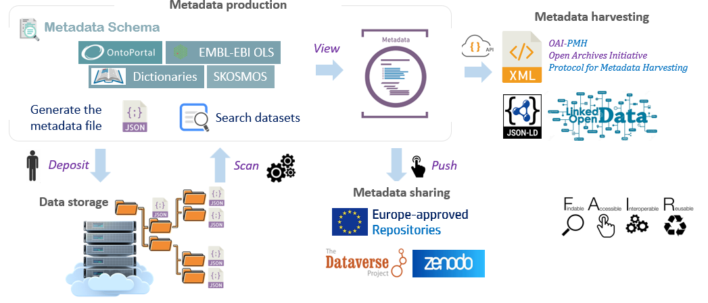
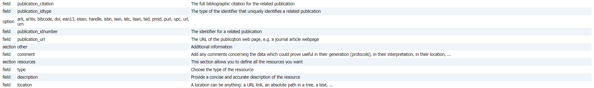
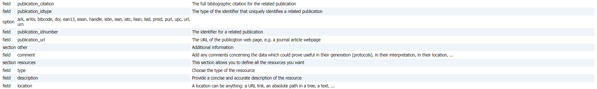
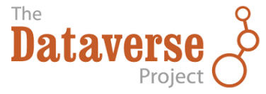

Maggot
| Description | Maggot, Metadata aggregation on data storage |
| Author(s) | Daniel Jacob |
| Copyright | INRAE, 2022-2024 |
Home¶
An ecosystem for producing and sharing metadata
Foster good data management, with data sharing in mind¶
Sharing descriptive Metadata is the first essential step towards Open Scientific Data. With this in mind, Maggot was specifically designed to annotate datasets by creating a metadata file to attach to the storage space. Indeed, it allows users to easily add descriptive metadata to datasets produced within a collective of people (research unit, platform, multi-partner project, etc.). This approach fits perfectly into a data management plan as it addresses the issues of data organization and documentation, data storage and frictionless metadata sharing within this same collective and beyond.
Main features of Maggot¶
The main functionalities of Maggot were established according to a well-defined need (See Background).
- Documente with Metadata your datasets produced within a collective of people, thus making it possible :
- to answer certain questions of the Data Management Plan (DMP) concerning the organization, documentation, storage and sharing of data in the data storage space,
- to meet certain data and metadata requirements, listed for example by the Open Research Europe in accordance with the FAIR principles.
- Search datasets by their metadata
- Indeed, the descriptive metadata thus produced can be associated with the corresponding data directly in the storage space then it is possible to perform a search on the metadata in order to find one or more sets of data. Only descriptive metadata is accessible by default.
- Publish the metadata of datasets along with their data files into an Europe-approved repository
{kind=link}
See a short Presentation and Poster for a quick overview.
Overview of the different stages of metadata management¶

Note: The step numbers indicated in the figure correspond to the different points developed below
1 - First you must define all the metadata that will be used to describe your datasets.
2 - Entering metadata will be greatly facilitated by the use of dictionaries.
{kind=link}
{kind=link}
3 - The web interface for entering metadata is entirely built on the basis of definition files.
{kind=link}
4 - The file generated in JSON format must be placed in the storage space reserved for this purpose.
5 - A search of the datasets can thus be carried out on the basis of the metadata.
{kind=link}
6 - The detailed metadata sheet provides all the metadata divided by section.
{kind=link}
{kind=link}
7 - Finally, once you have decided to publish your metadata with your data, you can choose the repository
Additional key points¶
Being able to generate descriptive metadata from the start of a project or study without waiting for all the data to be acquired or processed, nor for the moment when one wish to publish data, thus respecting the research data lifecycle as best as possible. Read more.
The implementation of the tool requires involving all data stakeholders upstream (definition of the metadata schema, vocabularies, targeted data repositories, etc.); everyone has their role: data manager/data steward on one side but also scientists and data producers on the other. Read more.
A progressive rise towards an increasingly controlled and standardized vocabulary is not only possible but even encouraged. First we can start with a simple vocabulary dictionary used locally and grouping together domain vocabularies. Then we can consider the creation of a thesaurus with or without mapping to ontologies. The promotion of ontologies must also be done gradually by selecting those which are truly relevant for the collective. A tool like Maggot makes it easy to implement them (See Vocabulary). Read more.
Quick tutorial¶
Quick tutorial¶
This is a quick tutorial of how to use the Maggot tool in practice and therefore preferably targeting the end user.
See a short Presentation and Poster if you want to have a more general overview of the tool.
Overview¶
The Maggot tool is made up of several modules, all accessible from the main page by clicking on the corresponding box of the menu as shown in the figure below:
{kind=link}
- Configuration
This module mainly concerns the data manager and makes it possible to construct all the terminology definition files, i.e. the metadata and sources of associated vocabularies. See Definition files then Configuration.
- Private Access
This module allows data producer to temporarily protect access to metadata for the time necessary before sharing it within his collective. See Private access key management.
- Dictionaries
This module allows data producer to view content of all dictionaries. It also allows data steward to edit their content. See Dictionaries for technical details only.
- Metadata Entry
This is the main module allowing the data producer to enter their metadata relating to a dataset. See the corresponding tutorial for Metadata Entry.
- Search datasets
This module allows users to search datasets based on the associated metadata, to see all the metadata and possibly to have access to the data itself. See the corresponding tutorial for Search Datasets. This obviously assumes that the metadata files have been deposited in the correct directory in the storage space dedicated to data management within your collective. See Infrastructure.
- File Browser (optional)
This module gives users access to a file browser provided that the data manager has installed it. See File Browser
- Publication
This module allows either the data producer or the data steward to publish the metadata with possibly the corresponding data within the suitable data repository. See Publication
Quick tutorial
Quick tutorial¶
Metadata Entry¶
The figures are given here for illustration purposes but certain elements may be different for you given that this will depend on the configuration on your instance, in particular the choice of metadata, and the associated vocabulary sources.
Indeed, the choice of vocabulary sources (ontologies, thesauri, dictionaries) as well as the choice of metadata fields to enter must in principle have been the subject of discussion between data producers and data manager during the implementation of the Maggot tool in order to find the best compromise between the choice of sources and all the scientific fields targeted (see Definition files). However a later addition is always possible.
Overview¶
When you enter the metadata entry module you should see a page that looks like the figure below:

-
All the fields (metadata) to be filled in are distributed between several tabs, also called sections. Each section tries to group together a set of fields relating to the same topic.
-
You can reload a previously created metadata file either from your external disk or from the data storage space. All form fields will then be initialized with the value(s) defined in the metadata file.
-
You must at least complete the mandatory fields marked with a red star.
-
It is possible to obtain help for each field to be completed. A mini-icon with a question mark is placed after each field label. By clicking on this icon, a web page opens with the focus on the definition of the corresponding field. This help should provide you with at least a definition of a field and, if necessary, instructions on how to fill it in. It should be noted that the quality of the documentation depends on each instance and its configuration.
-
Once the form has been completed, even partially (at least those which are mandatory and marked with a red star), you can export your metadata in the form of a file. See Metadata File
Dictionaries¶
Dictionary-based metadata (e.g. people's names) can easily be entered by autocomplete in the 'Search value' box provided the name appears in the corresponding dictionary.
{kind=link}
However, if the name does not yet appear in the dictionary, simply enter the full name (first name & last name) in the main box, making sure to separate each name with a comma and then a space as shown in the figure below.

Then you can request to add the additional person name(s) to the dictionary later as described below:

-
From the home page, select "Dictionaries". As username, just put "maggot" (this might be different within your instance).
-
Then after choosing the "people" dictionary, you can download the entire dictionary in a TSV file (Tab-Separated Values) ready to be edited with your favorite spreadsheet.
-
Add all the desired people's names with their institution, and possibly their ORCID and their email address. Please note that emails are required for authors and contacts
-
You will then just have to send it to the data manager so that he can add new people's names to the online dictionary.
Please proceed in the same way for all dictionaries (people, funders, producer, vocabulary)
Controlled Vocabulary¶
Depending on the configuration of your instance, it is very likely that certain fields (eg. keywords) are connected to a controlled vocabulary source (e.g. ontology, thesaurus). Vocabulary based on ontologies, thesauri or even dictionaries can easily be entered by autocomplete in the "search for a value" box provided that the term exists in the corresponding vocabulary source.
{kind=link}
If a term cannot be found by autocomplete, you can enter the term directly in the main box, making sure to separate each term with a comma and a space as shown in the figure below.
{kind=link}
The data steward will later try to link it to a vocabulary source that may be suitable for the domain in question. Furthermore, even if the choice of vocabulary sources was made before the tool was put into service, a later addition is always possible. You should make the request to your data manager.
Resources¶
Because data is often scattered across various platforms, databases, and file formats, this making it challenging to locate and access. This is called data fragmentation. So the Maggot tool allows you to specify resources, i.e. data in the broader sense, whether external or internal, allowing to centralize all links towards data.
- External resources will be specified by a URL with preference for a permanent identifier (e.g. DOI) but also any URL pointing to data whether they comply with the FAIR principle (e.g. ODAM) or not.
- Internal resources will be the data files to be uploaded to the data repository at push time. In the latter case the exact name of the file on the storage space must appear in the location field.
- Furthermore, in the case of local data management, it would be wise to indicate in which space the data is located if it is not located in the same place as the metadata (e.g. NextCloud, Unit NAS, etc.)
Four fields must be filled in :

-
Resource Type : Choose the type of the resource in the droplist.
-
Media Type : Choose a media type if applicable by autocomplete.
-
Description : Provide a concise and accurate description of the resource. Must not exceed 30 characters.
-
Location : Preferably indicate an URL to an external resource accessible to all. But it can also be a password-protected resource (e.g. a disk space on the cloud). This can also be text clearly indicating where the resource is located (internal disk space). Finally, this can be the name of a file deposited on the same disk space as the metadata file, in order to be able to push it in the data repository at the same time as the metadata (see Publication).
Quick tutorial¶
Metadata File¶
Export¶
Once the form has been completed, even partially (at least those which are mandatory and marked with a red star), you can export your metadata in the form of a file. The file is in JSON format and must have the prefix 'META_'.
By clicking on the "Generate the metadata file" button, you can save it on your disk space.

Furthermore, if email sending has been configured (see settings), then you have the possibility to send the metadata file to the data managers for curation, and possibly also to support its storage on data disk space if specific rights are required.
{kind=link}
Use¶
In case you want to save the metadata file on your disk space, you have two ways to use this file:
- 1. The first use is the recommended one because it allows metadata management within your collective.
You drop the metadata file directly under the data directory corresponding to the metadata. Indeed, when installing the tool, a storage space dedicated to the tool had to be provided for this purpose. See infrastructure. Once deposited, you just have to wait around 30 minutes maximum so that the tool has had time to scan the root of the data directories looking for new files in order to update the database. After this period, the description of your dataset will be visible from the interface, and a selection of criteria will be made in order to restrict the search.
{kind=link}
You will then have the possibility to publish the metadata later with possibly the corresponding data in a data repository such as Dataverse or Zenodo.
- 2. The second use is only to deposit the metadata into a data repository
Whether with Dataverse or Zenodo, you have the possibility to publish metadata directly in one or other of these repositories without using the storage space.

Please note that you cannot also deposit the data files in this way. You will have to do this manually for each of them directly online in the repository.
Quick tutorial¶
Search Datasets¶
Dataset searching can be done in two ways:
- a simple search relying on a unique search bar allowing you to enter a series of keywords to search in all fields in the database.
- an advanced search by specifying a keyword for each of the targeted fields
Simple search¶
From one or more keywords entered in the search bar, all datasets containing at least one keyword (OR) or all keywords (AND) are selected. Regardless of where the keywords are contained, whether in a single field or several fields, the relevance of the search is therefore conditioned by the correct documentation of the fields. However, this type of search allows for a quick selection without having to ask questions about the fields.
- Below, an example of a simple search using 2 keywords including an author's name.
{kind=link}
Advanced search¶
Unlike a simple search, an advanced search requires specifying a keyword for each targeted field. This allows for greater relevance in the returned dataset list. On the other hand, setting up the search is more laborious and requires knowing a little about the fields, their definition and their content type.
- Below is an example of an advanced search using 2 targeted fields to search for the same person's contribution.

Infrastructure¶
Infrastructure : Local, Remote or Mixed¶

The necessary Infrastructure involves 1) a machine running a Linux OS and 2) a dedicated storage space.
1 - The machine will most often be of "virtual" type because more simpler to deploy, either locally (with VM providers such as VirtualBox, VMware Workstation or MS Hyper-V) or remotely (e.g VMware ESXi, Openstack: example of deployment). Moreover, the OS of your machine must allow you the deployment of docker containers. See for more details on What is Docker. The minimum characteristics of the VM are: 2 cpu, 2 Go RAM, 8 Go HD.
2 - The dedicated storage space could be either in the local space of the VM, or in a remote place on the network.
- If the storage space is directly included in the VM, then tools like WinSCP or RcloneBrowser will allow you to easily transfer your files to the data space.
- If the storage space is your collective's NAS, you will need to make sure to open the port corresponding to the remote disk mount protocol (e.g SMB, NFS, iSCSI, ...). on your network's firewall. If both VM and data storage are not in the same private network, it will probably also require installing the sofware layer corresponding to your corporate VPN on the VM so that it can access your NAS. See example successfully tested.
- If the storage space is in a data center (e.g. NextCloud, Google Drive), then you will need to install a tool such as rclone on your VM in order to be able to mount the storage space on the VM's disk space. See example successfully tested.
{kind=link}
{kind=link}
Installation¶
Install on your linux computer or linux / unix server¶
Requirements: The installation must be carried out on a (virtual) machine with a recent Linux OS that support Docker (see Infrastructure)
Retrieving the code¶
Go to the destination directory of your choice then clone the repository and cd to your clone path:
git clone https://github.com/inrae/pgd-mmdt.git pgd-mmdt
cd pgd-mmdt
Installation of Docker containers¶
MAGGOT uses 3 Docker images for 3 distinct services:
- pgd-mmdt-db which hosts the MongoDB database
- pgd-mmdt-scan which scans the data and updates the contents of the database and the web interface
- pgd-mmdt-web which hosts the web server and the web interface pages
Configuration¶
- run : defines root of the data directory (including for development)
- docker/db/initialisation/setupdb-js.template : defines MongoDB settings
- docker/scan/scripts/config.py : defines MongoDB settings (dbserver, dbport, username, password)
- web/inc/config/mongodb.inc : defines MongoDB settings (dbserver, dbport, username, password)
- web/inc/config/config.inc : defines many of web parameters (modify only if necessary)
- web/inc/config/local.inc : defines the application parameters specific to the local installation (not erased when updating).
Warning : You have to pay attention to put the same MongoDB settings in all the above configuration files. It is best not to change anything. It would have been preferable to put a single configuration file but this was not yet done given the different languages involved (bash, javascript, python, PHP). To be done!
Warning : If you are using VirtualBox with Windows then you must make sure to Enable AVX
Note : If you want to run multiple instances, you will need to change in the run file, i) the container names, ii) the data path, iii) the MongoDB volume name and iv) the MongoDB port
The following two JSON files are defined by default but can be easily configured from the web interface. See the Terminology Configuration section.
- web/conf/config_terms.json : define the terminology
- web/conf/maggot-schema.json : define the JSON schema used to validate metadata files.
Commands¶
The run shell script allows you to perform multiple actions by specifying an option :
cd pgd-mmdt
sh ./run <option>
Options:
- build : Creates the 3 Docker images namely pgd-mmdt-db, pgd-mmdt-scan and pgd-mmdt-web
- pull : Retrieves (pull) from DockerHub the 3 Docker images namely pgd-mmdt-db, pgd-mmdt-scan and pgd-mmdt-web
- start : 1) Starts the 3 services by creating the Docker containers corresponding to the Docker images; 2) Creates also the MongoDB volume.
- stop : 1) Removes all the 3 Docker containers; 2) Remove the MongoDB volume.
- initdb : Creates and initializes the Mongo collection then loads the metadata sets (JSON file) into the database
- scan : Scans the directory tree for metadata files and compiles them into a JSON file.
- fullstart : Executes the start and initdb actions.
- restart : Executes the stop and fullstart actions.
- ps : Checks that all containers are running correctly
- statdb : Retrieves information about the Mongo database in JSON format (Application must be started in full mode)
- showdb : Retrieves the content of the Mongo database in JSON format (Application must be started in full mode)
- passwd <user>: Defines the admin password if no user is specified, allowing you to add entries in dictionaries or to add/update the terminology files (definition & documentation, see configuration). If a user is specified, the dictionary consultation will be authorized for this user.
Home page customization¶
- Since the version 2.3, it is now more easy to customize the home page, depending on your site. See Home page customization
Starting the application¶
-
You must first either build the 3 docker container images ... (using MongoDB 6.0+ with AVX enabled)
sh ./run build -
... or pull the 3 images from DockerHub
sh ./run pull -
The application can be sequentially started :
- Starting the web interface
sh ./run start - Scanning the data directory to search for metadata files (META_XXXX.json) in case this is the first time the application is being run.
sh ./run scan - Initialization of the MongoDB database
sh ./run initdb
- Starting the web interface
-
You can also launch the 2 steps (start and initdb) with a single command:
sh ./run fullstart - You can check if all metadata sets have been loaded using the showdb action:
sh ./run showdb | grep ' title' - To update the MongoDB database in case you have uploaded a new or updated metadata file, you must perform a scan then restart the system once it is complete. This allows for a background scan without preventing the application from functioning.
sh ./run scan sh ./run restart - WARNING: Modifying the terminology file will also affect MongoDB. Therefore, you must first stop and then restart the application without initializing the database, perform a scan, and then restart the application in full mode.
sh ./run stop sh ./run start sh ./run scan sh ./run restart
Launching the web application in the web browser¶
-
Once the application is started, we can see if the containers are started using the following command:
docker ps -a -
which should produce a result similar to the following:
CONTAINER ID IMAGE COMMAND CREATED STATUS PORTS NAMES 5914504f456d pgd-mmdt-web "docker-php-entrypoi." 12 seconds ago Up 10 seconds 0.0.0.0:8087->80/tcp, :::8087->80/tcp mmdt-web 226b13ed9467 pgd-mmdt-scan "cron -f" 12 seconds ago Up 11 seconds mmdt-scan 81fecbb56d23 pgd-mmdt-db "docker-entrypoint.s." 13 seconds ago Up 12 seconds 27017/tcp mmdt-db
-
On the first line, the one which corresponds to the web interface, we see that port 80 of the docker is exported to port 8087 of the VM. Let's say that the IP address of your VM is 192.168.56.2, then in your browser you will need to put the URL http://192.168.56.2:8087/. You can of course change the port number in the 'run' file.
-
Finally, we recommend using a lightweight http server like nginx so that the Maggot URL will be http://192.168.56.2/maggot/. Below an example of config:
## /etc/nginx/nginx.conf http { ... upstream maggot { server 127.0.0.1:8087; } ... } ## /etc/nginx/conf.d/my-site.conf server { listen 80 default; server_name $host; ... location ~ ^/maggot/api/([^/]+)/([^/]+)$ { rewrite ^/maggot/api/([^/]+)/([^/]+)$ /maggot/metadata/$1?format=$2; } location ~ ^/maggot/api/([^/]+)$ { rewrite ^/maggot/api/([^/]+)$ /maggot/metadata/$1?format=maggot; } location ~ ^/maggot/graph/([^/]+)$ { rewrite ^/maggot/graph/([^/]+)$ /maggot/metadata/$1?format=graph; } location /maggot/ { proxy_set_header Host $host; proxy_set_header X-App-Name 'maggot'; proxy_set_header X-Real-Ip $remote_addr; proxy_set_header X-Forwarded-Host $host; proxy_set_header X-Forwarded-For $proxy_add_x_forwarded_for; proxy_pass http://maggot/; } ... }
Stoping the application¶
- To stop the application :
sh ./run stop
Updating the application¶
When updating the application, it is imperative to preserve a whole set of configuration files as well as the content of certain directories (dictionaries, javascripts dedicated to vocabularies, etc.). An update script is available (./etc/update-maggot.sh) preferably placed under '/usr/local/bin'. To preserve your configuration, it is recommended to create local configuration files.
-
A first file 'local.conf' will contain all the parameters to be preserved, initially contained in the 'run' file. A small example could be as follow :
#!/bin/bash # Hostname of the Website HOST=pmb-bordeaux.fr # Local HTTP Port for web application WEB_PORT=8088 # Path to the data DATADIR=/media/Workdir/Share/DATA/ -
A second file './web/inc/config/local.inc' will contain all the parameters to be preserved, initially contained in the './web/inc/config/config.inc' file. A small example could be as follow :
<?php # Main title $TITLE ='Metadata management - My Labs'; $MAINTITLE =$TITLE; # File Browser $FILEBROWSER=1; $URL_FILEBROWSER='/fb/'; # Enable some functionalities $export_oai = 1; ?>
Architecture diagram¶
The architecture diagram shows the modules and their interactions (MongoDB, Web Interface, Metadata File Search), each embedded in a Docker container.
See how to do proceed for configuration steps.

File Browser¶
You can provide access to your data via a file browser. This application must be installed separately but can be connected to Maggot by specifying the corresponding URL in the configuration file. Users and their rights are managed in the filebrowser application. Likewise, we can also create links to the data without a password. These links can be usefully specified as external resources in the metadata managed by Maggot.
{kind=link}
See how to do install in github
{kind=link}
Authentication¶
Purpose: Implement an authentication layer based on OAUTH 2.0
The initial choice was not to manage users in the Maggot tool. This choice was made to promote the complete opening by default of metadata within a collective. However, for management within a collective that goes beyond a simple intranet, it is necessary to set up an authentication layer. Setting up such a layer can be done independently of the Maggot tool, i.e. without modifying its code or configuration. An SSO implementation is proposed online, which can serve as a basis for a larger configuration. A Wiki page provides a detailed description.
- Source code on github : https://github.com/djacob65/maggot-sso/

Keycloak supports OIDC (an extension to OAuth 2.0) and works as an IdP while authenticating a client
Definition Files¶
Metadata definition files¶
The Maggot tool offers great flexibility in configuration. It allows you to completely choose all the metadata you want to describe your data. You can base yourself on an existing metadata schema, invent your own schema or, more pragmatically, mix one or more schemas by introducing some metadata specific to your field of application. However, keep in mind that if you want to add descriptive metadata to your data then a certain amount of information is expected. But a completely different use of the tool is possible, it's up to you.
There are two levels of definition files as shown the figure below:
{kind=link}
1 - The first level concerns the definition of terminology (metadata) similar to a descriptive metadata plan. Clearly, this category is more akin to configuration files. They represent the heart of the application around which everything else is based. The input and search interfaces are completely generated from these definition files (especially the web/conf/config_terms.txt file), thus defining each of the fields, their input type (checkbox, dropbox, textbox, ...) and the associated controlled vocabulary (ontology and thesaurus by autocompletion, drop-down list according to a list of fixed terms). This is why a configuration step is essential in order to be able to configure all the other modules.
2 - The second level concerns the definitions of the mapping to a differently structured metadata schema (metadata crosswalk, i.e a specification for mapping one metadata standard to another), used either i) for metadata export to a remote repository (e.g. Dataverse, Zenodo) or ii) for metadata harvesting (e.g. JSON-LD, OAI-PMH). Simply place the definition files in the configuration directory (web/conf) for them to be taken into account, provided you have adjusted the configuration (See Settings).
All definition files are made using a simple spreadsheet then exported in TSV format.
The list of definition files in Maggot are given below. All must be put under the directory web/conf.

See an example on line : https://pmb-bordeaux.fr/maggot/config/view and the corresponding form based on these definition files.
Definition files
Terminology¶
Definition of terminology¶
There are two definition files to set up.
- The terminology definition file (config_terms.txt) serving to describe all terminology used to define the metadata of a dataset.
- The terminology documentation file (config_doc.txt) serving to documente all terminology definitions.
Each time there is a change in these two definition files, it is necessary to convert them so that they are taken into account by the application.
Terminology is the set of terms used to define the metadata of a dataset. A single file (web/conf/config_terms.txt) contains all the terminology. The input and search interfaces (e.g screenshot) are completely generated from this definition file, thus defining i) each of the fields, their input type (checkbox, dropbox, textbox, ...) and ii) the associated controlled vocabulary (ontology and thesaurus by autocompletion, drop-down list according to a list of fixed terms).
{kind=link}
The metadata schema proposed by defaut is mainly established according to the DDI (Data Documentation Initiative) schema that also corresponds to that adopted by the Dataverse software.
Terminology is organised in several sections. By default 6 sections are proposed, but you can redefine them as you wish:
- DEFINITION : Section for describing shortly the dataset.
- STATUS : Section for defining the status of the dataset, associated rights, dates, etc.
- MANAGEMENT : Section for assigning names of people or organizations who participated in the production of data and according to the type of participation.
- DESCRIPTORS : Section for defining elements characterizing the data themselves and certain experimental conditions for obtaining them.
- OTHER : Section for entering miscellious information (protocols, comments, issues, ...)
- RESOURCES : Section for defining metadata about all the resources you want, i.e both external (links) and internal (data files on the storage space) resources. This section does not require any configuration a priori, it is added de facto.
For each section, fields are then defined. These fields can be defined according to the way they will be entered via the web interface. There are 6 different types of input: check boxes (checkbox), drop lists (dropbox), single-line text boxes (textbox), single-line text boxes with an additional box for multiple selection from a catalog of terms (multiselect), date picker (datebox) and multi-line text boxes (areabox).

For two types (checkbox and dropbox), it is possible to define the values to be selected (predefined terms).
Structure of the Terminology definition file (TSV)¶
The file must have 9 columns with headers defined as follows:
- column 1 - Field : shortname of the fields
- column 2 - Section : shortname ot the sections
- column 3 - Required : indicates if the field is mandatory ('Y') or not ('N')
- column 4 - Search : indicates if the field can be used as a criterion search ('Y') or not ('N')
- column 5 - Shortview : indicates with ordered numbers if the field serves for the overview table after the search (empty by default)
- column 6 - Type : indicates the way they will be entered via the web interface (possible values are: textbox, dropbox, checkbox, multiselect, datebox and areabox).
- column 7 - Features : dependings on the Type value, one can specifiy some specific features. If several features, they must be separated by a comma.
- open=0 or open=1 (checkbox) : indicates if the selection is opened or not. See Vocabulary.
- autocomplete=entity (textbox, checkbox & multiselect) : The entity.js file must be present under web/cvlist/entity/ if the entity is a dictionary otherwise it must be present under web/js/autocomplete. See Vocabulary.
- ws=web_service name (multiselect) : indicates the web service name, e.g VO, ols, agroportal or bioportal. Attribute available only if the API call for the vocabulary is based on the Twitter's Typeahead library. In this case, the autocomplete attribute must be equal to typeahead. See Vocabulary.
- onto=ontology list/thesaurus name (multiselect) : indicates the ontology list, e.g. for a web service based on OntoPortal or the thesaurus name, e.g. for a web service based on SKOSMOS. In case of an ontology list, the separator (:) must a colon with no space (eg. OBI:EFO:PO:ENVO). The value 'all' is also possible to indicate that we wish to query all ontologies or thesauri. Attribute available only if the API call for the vocabulary is based on the Twitter's Typeahead library. In this case, the autocomplete attribute must be equal to typeahead. See Vocabulary.
- width=NNNpx (textbox, dropbox, datebox) : allows you to specify the width of the box. Usefull if you want put several fields in the same line. See note 1 below.
- row=NN and cols=NN (areabox) : allows you to specify the row and column size of the textarea.
- column 8 - Label : Labels corresponding to the fields that will appear in the web interface
-
column 9 - Predefined terms : for fields defined with a type equal to checkbox or dropbox, one can give a list of terms separated by a comma.
-
Notes
- the fields will be displayed in the same order as in the file and by section. So if you want to specify several textboxes with particular sizes so that they are on the same line, they should belong to the same section and follow each other in the file in the same order.
- the title and description fields are mandatory but not necessarily in the same section.
Below an example of Terminology definition file (TSV)

Example of Maggot JSON file generated based on the same definition file
- Maggot JSON of the FRIM dataset and its corresponding JSON-schema
As a reminder, a JSON schema serves to define the structure, content, and constraints of JSON data (e.g required fields, data types, default values), ensuring that the data exchanged adheres to an expected format. It thus facilitates data validation, and improves interoperability between components. In the Maggot application, JSON schema is used i) when discovering metadata files in the storage space, ii) when uploading a JSON file via the web interface. In both cases, we rely on the assertible.com validation API.
Structure of the Terminology documentation file (TSV)¶
The documentation definition file is used to have online help for each field (small icon placed next to each label on the form). So it should only be modified when a field is added or deleted, or moved to another section. This file will be used then to generate the online metadata documentation according to the figure below (See Configuration to find out how to carry out this transformation).

The file must have 3 columns with headers defined as follows:
- column 1 - Type : The type of the element, namely 'section', 'field' or 'option'. An 'option' type must correspond to each of the options for a field corresponding to a drop-down list.
- column 2 - Name : Name of the element. The names of the sections, variables and drop-down options must be exactly the same as those specified in the terminology definition file.
- column 3 - Description : The description corresponding to the element, serving as much as possible to give indications on the information to be selected or entered, in order to remove possible ambiguities.
Below an example of Terminology documentation file (TSV)
 

{kind=link}
Same example as above converted to HTML format using Markdown format
Vocabulary¶
Vocabulary¶
- In this section we expose the full extent of the possibilities concerning the vocabulary in Maggot.
- Choosing the type of vocabulary and how to enter it depends entirely on what you put in the terminology definition file. However, some approaches require a little technicality by writing small scripts based on JavaScript, but nothing too serious. You can always take an already ready-made script and modify only the part that concerns your focus.
1 - Vocabulary based on a list of terms fixed in advance (checbox with feature open=0)
- List of well-chosen and limited Control Vocabulary e.g according to a reference e.g. Data Document Initiative.
{kind=link}
2 - Vocabulary open for addition (checkbox with feature open=1)
- allows you to collect the desired Control Vocabulary (CV) from users. In order to initiate the list, you can put some terms in the predefined terms column of the terminology definition file.

3 - JavaScript-based vocabulary in a text field (textbox)
-
The JavaScript here involves populating a list variable (e.g. cities = [ ... ]) with the desired vocabulary. The name of this variable must be the same as the name of the JavaScript file and must present under web/js/autocomplete (e.g. cities.js)
-
The list can be directly embedded in the code (e.g. lifecycle.js) or retrieved via web API. For example, to enter a French city you can use the API geo.api.gouv.fr. See cities.js
{kind=link}
4 - Vocabulary based on a dictionary with multiple selection (multiselect)
- Dictionaries allow you to record multiple information necessary to define an entity, such as the names of people or even the funders. These information, once entered and saved in a file called a dictionary. Based on a very simple JavaScript retrieving the complete list of items included in the dictionary, thus creating a sort of internal API, we can fill a Maggot field by autocompletion related to a search for these items.
- The JavaScript file must be named dico.js and be present under web/cvlist/dico/ where dico is the name of the dictionary. See for instance people.js
{kind=link}
5 - Multi-select vocabulary, based on an API managed by Twitter's Typeahead library. (multiselect)
-
Maggot embeds Twitter's Typeahead library making it relatively easy for a data manager to implement a new vocabulary from its web API. With the help of this library, this allows users to select a term from a list of vocabulary terms within a drop-down list. The list of terms has been pre-selected based on the first letters entered in the Search for value box. This list is dynamically refreshed when letters are added or modified. So, unlike a single call to the API returning the entire list of terms in memory, which can take a very long time to load, the calls are made dynamically on the basis of a portion of a word (3 letters minimum by default), limiting the number of terms to retrieve. Thus this makes use very fluid.
-
To implement an API-based web service, it is necessary to create two scripts (<ws>_typeahead.js and <wstype>.inc) which will each be used at one stage of the process as shown in the following figure:

-
<ws>_typeahead.js : This file corresponds to the API call when entering vocabulary using Twitter's Typeahead library. The prefix <ws> standing for web service, must be positioned so as to correspond to the name of the service indicated in the CVname column of the mapping file (see mapping) as well as to the corresponding value for the 'ws' attribute in the column 'features' of the terminology definition file (see definitions). This file must then be placed under the web/js/autocomplete directory. You will find a template file in this directory.
-
<wstype>.inc : This file corresponds to the API call while metadata crosswalks processus and based on the mapping file (web/conf/mapping.txt).The prefix <wstype> standing for web service type, must be positioned so as to correspond to the type of the service indicated in the CVtype column of the mapping file. This file must then be placed under the web/inc/mapping/ directory. You will find a template file in this directory.
- By defaut, Maggot already provides some vocaburay web services implemented in this way such as the ontology portals based on OntoPortal, the SKOSMOS thesauri and the EMBL-EBI Ontology Lookup Service. The figure below shows the configuration in the terminology definition file and the corresponding screenshots for each vocabulary.

-
AgroPortal and BioPortal are both based on OntoPortal which is a generic technology to build ontology repositories or semantic artefact catalogues.
-
SKOSMOS is a web tool facilitating the posting of controlled vocabulary online in the form of a thesaurus according to the SKOS data model. It offers a navigation interface as well as a web API.
-
EMBL-EBI Ontology Lookup Service is a repository for biomedical ontologies that aims to provide a single point of access to the latest ontology versions. You can browse the ontologies through the website as well as programmatically via the OLS API.
Notes : Regarding these 3 types of resources (Ontoportal, SKOSMOS and OLS), it is possible to specify 'onto=all' in the features to indicate that we wish to query all ontologies or thesauri.
- Here is, for example, the implementation of the INRAE Thesaurus, a web service based on SKOSMOS. The figure below shows in more details how to fill in the definition files linked to the two scripts necessary for implementing the web service :

-
Links to the two scripts :
Mapping Definition File¶
Mapping definition File¶
The mapping file (mapping.txt) is used as indicated by its name to match a term chosen by the user during entry with another term from an ontology or a thesaurus and therefore to obtain a URL which will be used for referencing. It can be used for each metadata crosswalk requiring such a mapping (e.g. to the Dataverse, Zenodo or JSON-LD format).
The role of this definition file is illustrated with the figure above
{kind=link}
The file must have 5 columns with headers defined as follows:
- column 1 - CVname : name of the mapping entry
- column 2 - CVtype : type of the CV target (by default, must be either ontoportal, skosmos or ols)
- column 3 - CVurl : URL of the corresponding web API
- column 4 - CVterm : name of the thesaurus or the ontology list separated by a comma
- column 5 - CVlang : the chosen language (mainly for thesauri)
Note that a corresponding <CVtype>.inc file must be located under web/inc/mapping.
Below an example of Mapping definition file (TSV)

Dataverse Definition File¶

Open source research data repository software, approved by Europe.
Dataverse definition File¶
This definition file will allow Maggot to automatically export the dataset into a data repository based on Dataverse. The approach consists of starting from the Maggot metadata file in JSON format and transforming it into another JSON format compatible with Dataverse, knowing that this metadata crosswalk was made possible by choosing the right metadata schema at upstream.

The structure of the Dataverse JSON output file being known internally, a minimum of information is therefore necessary to carry out the correspondence.
The file must have 4 columns + one optional with headers defined as follows:
- column 1 - Field : Shortname of the Maggot fields
- column 2 - Typename : The corresponding Dataverse fields.
- column 3 - Type :The Dataverse field at the top level encapsulating the fields in the Typename column where applicable
- column 4 - Terminology : Indicates from which vocabulary the mapping should be performed. Concerning the vocabulary to be mapped either i) on a dictionary, you must put the name of the corresponding dictionary prefixed with cvlist:, or ii) on ontologies or on a thesaurus, you must specify the corresponding entry in the mapping definition file prefixing it with cv:.
- column 5 - Block (optional): Name of the metadata block. Currently, only two blocks are support, namely the common metadata block called citation., the life science metadata block called biomedical. This column is optional but in this case, this assumes that all metadata correspond to the common metadata block (citation). See the structure of the metadata blocks in JSON format.
Below an example of Dataverse definition file (TSV)
{kind=link}
Example of Dataverse JSON file generated based on the definition file itself given as an example above.
Common metadata block (citation)¶
- List of Typename (column 2) supported by Maggot. Be careful of character case. See the structure of the common metadata blocks in JSON format.
| Typename | Decription | Type | Terminology | Linked to a CV | Required |
|---|---|---|---|---|---|
| title | The main title of the Dataset | - | - | No | Yes |
| subject | The area of study relevant to the Dataset | - | - | Yes (1) | Yes |
| dsDescription | A summary describing the purpose, nature, and scope of the Dataset | - | - | No | Yes |
| note | Additional information about the Dataset | - | - | No | No |
| language | A language that the Dataset's files is written in | - | - | Yes (1) | No |
| license | License of the dataset | - | - | Yes (1) | No |
| contacts | The entity, e.g. a person or organization, that users of the Dataset can contact with questions | - | must specified a dictionary (e.g. cvlist:people) | No | Yes |
| author | The entity, e.g. a person or organization, that created the Dataset | - | must specified a dictionary (e.g. cvlist:people) | No | Yes |
| collectors | people who participated in the data collection | must be equal to contributor | must specified a dictionary (e.g. cvlist:people) | No | No |
| curators | people who participated in the data curation | must be equal to contributor | must specified a dictionary (e.g. cvlist:people) | No | No |
| members | people involved in the project | must be equal to contributor | must specified a dictionary (e.g. cvlist:people) | No | No |
| leaders | leaders of the projet | must be equal to contributor | must specified a dictionary (e.g. cvlist:people) | No | No |
| wpleader | leader of a WP projct | must be equal to contributor | must specified a dictionary (e.g. cvlist:people) | No | No |
| depositor | Depositor of the dataset | - | - | No | No |
| producer | The entity, such a person or organization, managing the finances or other administrative processes involved in the creation of the Dataset | - | must specified a dictionary (e.g. cvlist:producer) | No | No |
| grantNumbers | Information about the Dataset's financial support | - | must specified a dictionary (e.g. cvlist:grant) | No | No |
| keyword | A key term that describes an important aspect of the Dataset and information about any controlled vocabulary used | - | must be specified an ontology (e.g. cv:bponto) | No | No |
| topics | Indicates a broad, important topic or subject that the Dataset covers and information about any controlled vocabulary used | - | must be specified an ontology (e.g. cv:bponto) | No | No |
| kindOfData | The type of data included in the files (e.g. survey data, clinical data, or machine-readable text) | - | - | Yes (1) | Yes |
| dataOrigin | Data Origin | - | - | Yes (1) | No |
| lifeCycleStep | Specifies the event happening over the data life cycle that is considered significant enough to document. | - | - | Yes (1) | No |
| publication_citation | The full bibliographic citation for the related publication | must be equal to publication | - | No | No |
| publication_idtype | The type of identifier that uniquely identifies a related publication | must be equal to publication | - | Yes (1) | No |
| publication_idnumber | The identifier for a related publication | must be equal to publication | - | No | No |
| publication_url | The URL form of the identifier entered in the Identifier field, e.g. the DOI URL if a DOI was entered in the Identifier field. | must be equal to publication | - | No | No |
(1) The list of CV terms must be defined either in the Predefined terms column in the terminology definition file or in a javascipt. See vocabulary (points 1 & 3).
Life science metadata block (biomedical)¶
- List of Typename (column 2) supported by Maggot. Be careful of character case. See the structure of the life science metadata blocks in JSON format.
| Typename | Decription | Type | Terminology | Linked to a CV | Required |
|---|---|---|---|---|---|
| Organism | The taxonomic name of the organism used in the Dataset or from which the starting biological material derives. | - | - | Yes | No |
| DesignType | Design types that are based on the overall experimental design. | - | - | Yes | No |
| FactorType | Factors used in the Dataset. | - | - | Yes | No |
| MeasurementType | A term to qualify the endpoint, or what is being measured (e.g. gene expression profiling; protein identification). | - | - | Yes | No |
| TechnologyType | A term to identify the technology used to perform the measurement (e.g. DNA microarray; mass spectrometry). | - | - | Yes | No |
| Platform | The manufacturer and name of the technology platform used in the assay (e.g. Bruker AVANCE). | - | - | Yes | No |
| CellType | The name of the cell line from which the source or sample derives. | - | - | No | No |
| SampleType | Sample description | - | - | No | No |
| ProtocleType | Protocole type | - | - | No | No |
Point of attention : In the Life Sciences metadata block, there are two ways to populate certain metadata (organism, study design, factor, measurement type, technology type, platform): either with a predefined CV (A), or with user-defined terms (B) as shown in the figure below:

Since Maggot only allows one vocabulary source (e.g., a dictionary) per metadata field, the data manager must therefore add the most relevant predefined CV to each appropriate dictionary (a). Then, during the transfer to Dataverse, a sorting mechanism between the two types of vocabularies (predefined vocabularies and others) ensures that the Dataverse metadata fields are correctly populated (b).

The figure below shows an example as an illustration:

Zenodo Definition File¶
Open source research data repository software, approved by Europe.
Zenodo definition File¶
This definition file will allow Maggot to automatically export the dataset into a data repository based on Zenodo. The approach consists of starting from the Maggot metadata file in JSON format and transforming it into another JSON format compatible with Zenodo.
The structure of the Zenodo JSON output file is not known internally, information on the structure will therefore be necessary to carry out the correspondence.
Below an example of Zenodo definition file (TSV)

Example of Zenodo JSON file generated based on the definition file itself given as an example above.
JSON-LD Definition File¶

JSON-LD definition File¶
This definition file will allow harvesters to collect structured metadata based on a semantic schema, i.e the fields themselves and not just their content can be associated with a semantic definition (ontology for example) which will then facilitate the link between the metadata and therefore the data (JSON-LD). The chosen semantic schema is based on several metadata schemas.
The full workflow to "climb the Link Open Data mountain" is resumed by the figure below :

Metadata schemas used to build the model proposed by default:
Definition of the JSON-LD context using the metadata schemas proposed by default
{kind=link}
The structure of the JSON-LD is not known internally, information on the structure will therefore be necessary to carry out the correspondence.
Example of JSON-LD definition file (partial) using the metadata schemas proposed by default (TSV)

Example of JSON-LD file generated based on the definition file itself given as an example above,
and its corresponding related diagram
OAI-PMH Definition File¶

OAI-PMH is a protocol developed for harvesting metadata descriptions of records in an archive so that services can be built using metadata from many archives.
OAI-PMH definition File¶
This definition file will allow harvesters to collect metadata structured according to a standard schema (OAI-DC).
-
Based on the Open Archives Initiative Protocol for Metadata Harvesting - Version 2
-
Example of a OAI-PMH Data Provider Validation
-
Example of OAI-PMH output for a dataset
The structure of the OAI-PMH output file being known internally, a minimum of information is therefore necessary to carry out the correspondence.
Example of OAI-PMH definition file (TSV)

Another example of OAI-PMH definition file (TSV) with identifers & vocabulary mapping

Configuration¶
Terminology configuration¶
A single file (web/conf/config_terms.txt) contains all the terminology. The input and search interfaces are completely generated from this definition file, thus defining each of the fields, their input type (checkbox, dropbox, textbox, ...) and the associated controlled vocabulary (ontology and thesaurus by autocompletion, drop-down list according to a list of fixed terms). Internally, this file is converted to JSON format which is more suitable for use by the various modules, and in particular the creation of the MongoDB database schema when starting the application before filling it. A second file (web/conf/config_docs.txt) is used to document the terminology and its content is therefore closely linked to the previous file.
There are two main ways to update these two files (TSV format) on the server.
Update from external files¶
In this approach, you edit the two terminology files yourself in your favorite spreadsheet (1 & 2), then you drop the two files on the disk space of the server where the Maggot application is installed (3), and finally you restart the application (4) so that the conversions and the generation of additional files can integrate the updates. The following schema illustrates the process :
{kind=link}
Update from the web interface¶
In this approach, both terminology files are updated directly from Maggot's web interface. The following schema illustrates the process:

First, you select an existing section or define one to create, as well as a field to modify or create. Then an entry form guides you through the definition of the field to be added or updated. Once the field is fully defined, you update the terminology definition file by validating the entry. This also modifies the terminology documentation file accordingly. (1). The figure below shows an example of a new section creation along with a new field.
{kind=link}
In particular, support is provided for setting feature attributes as shown below :
{kind=link}
The next step is to entry a description for each newly created field and/or section (2). The figure below shows an example of documentation of the new section along with its field. Selecting the section alone without the field allows you to document it. Selecting a field also allows you to document it.

Finally you restart the application (3) so that the conversions and the generation of additional files can integrate the updates. Below, the input interface with its new section and associated field, as well as the corresponding documentation.

Note : Both functions to create / update the terminilogy files (definition & documentation) require to have admin privileges. See passwd in the Commands paragraph in the installation section.
Dictionaries¶
Presentation¶
- The use of dictionaries has no other purpose to facilitate the entry of metadata, entry which can be long and repetitive in generalist data warehouses (such as repository based on Dataverse).
- Dictionaries allow you to record multiple information necessary to define an entity, such as the names of people or even the funders. These information, once entered and saved in a file called a dictionary, can be subsequently associated with the corresponding entity.
- The dictionaries offered by default are: people (people), funders (grant), data producers (producer), as well as a vocabulary dictionary (vocabulary) allowing you to mix ontologies and thesauri from several sources.
- To add a new dictionary, simply create a directory under web/cvlist then putting the files corresponding to the dictionary inside. Dictionaries will be automatically found by browsing this directory.
- Dictionary files are made using a simple spreadsheet then exported in TSV format.
- Dictionaries are accessed through secure access limited to administrators allowing their editing. The login is by default 'admin'. You can add another account for consultation only using the following command:
sh ./run passwd <user>
The people dictionary¶
- Note : must not be changed in its format nor in its name.
- Like any dictionary, there must be 3 files (see below). Please note that the names of these files must always contain the name of the dictionary, i.e. same as the directory.
{kind=link}
- The format of the file containing the dictionary data (people.txt) is defined by another file (people_format.txt).
{kind=link}
- Thus, we know that the people dictionary must contain 5 columns (last name, first name, institution, ORCID number and email address) and that some fields are mandatory (last name, first name, institution) and others optional (ORCID number, email address).
- Each of the fields must respect a format specified by a regular expression in order to be accepted as valid.
- Optionally, you can connect an web API to each of the fields in order to make an entry by autocompletion from a remote register. Currently only ROR (Research Organization Registry) and ORCID are possible but the mechanism is in place for new extensions.
- The third file, a very simple script written in JavaScript, defines the way to retrieve the list of names (here by containing the first and last name). Note that the name of the variable must always be identical to that of the dictionary.
var people = []; // Each item in the 'people' list consists of the first two columns (0,1) separated by a space get_dictionary_values('people', merge=[0,' ',1]) - Below, an example is given when modifying a record. When you click on the Institute field which is connected to the ROR web API, the drop-down list of reseach organizations that can correspond in the register appears, if there are any.
- As for the ORCID API, the search is not done from the target cell but from the last name and first name given in the first two cells. If the search gives nothing, then a second query will be done only from the last name, because of the many possibilities of spelling first names, with or without accents, with hyphens or not in the case of a compound first name, etc.
{kind=link}
- Note: It is possible to edit dictionaries, by adding an entry for example, and at the same time be able to immediately find this new entry in the metadata entry in the Maggot tool. Indeed each dictionary is reloaded into memory as soon as the corresponding input box is clicked. See an illustration.
{kind=link}
Other dictionaries¶
- Funders : The dictionary of the funders allows you to define the funding agency, project ID and its corresponding URL.

* Note : can be renamed but while keeping its format (same columns and same layout).
{kind=link}
- Producers : The dictionary of the data producers allows you to define their Institute and project ID and their corresponding URL. Optionally, you can add the URL of the logo.

* Note : can be renamed but while keeping its format (same columns and same layout).

- Vocabulary : Use this dictionary for mixing thesauri and ontologies in order to better target the entire controlled vocabulary of its field of application. Only the vocabulary is mandatory, the URL linked to an ontology or a thesaurus is optional. See Vocabulary section to learn the extent of the possibilities concerning vocabulary in Maggot.
1 | |

Publish Metadata¶
Publish Metadata¶
- Once we have decided to publish our metadata with possibly our data, we can choose the repository that suits us. Currently repositories based on Dataverse and Zenodo are supported, both being Europe-approved repositories.
-
Using an approach that might be called machine-readable metadata, it is possible to populate metadata for a dataset into one of the proposed data repositories via its web API, provided that you have taken care to correctly define your metadata schema so that it is possible to make a correspondence with the chosen data repository using a mapping definition file.
-
The principle is illustrated by the figure above.

- We start from the Maggot JSON format metadata file generated from the web interface and based on the metadata profile defined by the terminology definition files.
- Then from a file defining the correspondence between the Maggot fields and those of the target repository, we can perform a metadata crosswalk to the JSON format supported by the web API of the target repository.
- During the process we enrich the metadata with controlled vocabularies based either on dictionaries or on thesauri and/or ontologies. For the latter cases, we use the web APIs of these sources to perform the mapping (see the definition of mapping).
- Finally, to be able to carry out the transfer i.e. the submission to the target repository (we say "push" for short), we first need to connect to the repository in order to retrieve the key (the API token) authorizing us to submit the dataset. This obviously assumes that we have the privileges (creation/modification rights) to do so.
https://www.google.com/search?q=metadata+crosswalk+definition&oq=metadata+crosswalk¶
Publication
Publish into Dataverse¶
Publish into Dataverse¶
- Based on the Dataverse Native API
1 - To submit metadata to a Dataverse repository, you must first select a dataset either from the drop-down list corresponding to the datasets listed on the data storage space or a metadata file from your local disk.
2 - You then need to connect to the repository in order to retrieve the key (the API token) authorizing you to submit the dataset. This obviously assumes that you have the privileges (creation/modification rights) to do so.
3 - After choosing the repository URL, you must also specify on which dataverse collection you want to deposit the datasets. As previously, you must have write rights to this dataverse collection.

- Then, all you have to do is click on 'Publish' to "push" the metadata to the repository. The figure below illustrates based on an example how the metadata is recorded in the repository as well as the Mapping corresponding to the fields linked to Controlled Vocabularies.

Deposit data files¶
-
If you also want to deposit data files at the same time as the metadata, you will need:
-
1 - declare the files to be deposited in the resources; these same files must also be present in the storage space.
-
2 - create a semaphore file (META_datafile_ok.txt); its sole presence, independently of its content (which may be empty) will authorize the transfer. Indeed, the creation of such a file guarantees that the user has actually write rights to the storage space corresponding to his dataset. This prevents someone else from publishing the data without having the right to do so. This mechanism also avoids having to manage user accounts on Maggot.
-

- The figure below illustrates based on an example how data files appear on the repository with annotations corresponding to those created in Maggot.

Publish into Zenodo¶
Publish into Zenodo¶
- Based on the Zenodo REST-API
1 - To submit metadata to a Zenodo repository, you must first select a dataset either from the drop-down list corresponding to the datasets listed on the data storage space or a metadata file from your local disk.
2 - Unless you have previously saved your API token, you must create a new one and copy and paste it before validating it. Before validating, you must check the deposit:access and deposit:write boxes in order to obtain creation and modification rights with this token.
3 - After choosing the repository URL, you can optionally choose a community to which the dataset will be linked. By default, you can leave empty this field.
- Warning : given the new changes introduced to the Zenodo validation process (October 2023), it seems that it is no longer possible to validate a community via API. Only a choice via the Zenodo web interface will allow you to do so in order to be validated later by the manager of this community.

Deposit data files¶
-
If you also want to deposit data files at the same time as the metadata, you will need (see figure below)
-
1 - declare the files to be deposited in the resources (1) ; these same files must also be present in the storage space.
-
2 - create a semaphore file (META_datafile_ok.txt) (2); its sole presence, independently of its content will authorize the transfer. Indeed, the creation of such a file guarantees that the user has actually write rights to the storage space corresponding to his dataset. This prevents someone else from publishing the data without having the right to do so. This mechanism also avoids having to manage user accounts on Maggot.
-
-
Then, all you have to do is click on 'Publish' to "push" the metadata and data to the repository (3).
-
After submission and if everything went well, a link to the deposit will be given to you (4).

- The figure below illustrates based on an example how the metadata and data is recorded in the repository.


About¶
Maggot, a research data cataloging tool¶
Motives¶
- Meet the challenges of organizing, documenting, storing and sharing data within a collective (unit, platform, project, etc.).
- Have visibility of what is produced within the collective: datasets, software, images, sounds, videos, analyses, codes, etc.
- Fall within an open science approach for sharing and reproducibility by promoting FAIR principles within the collective.
- Raise awareness among newcomers and students about a better description of what they produce.
State of need¶
- Implementing a data management plan imposes prerequisites such as the externalization of data to be preserved outside of users' disk space. This does not only concern published data but all data produced during the duration of a project. Above all, this outsourcing makes it possible to gather the data in one place and already constitutes a first-level backup. This becomes even more necessary when temporary agents (doctoral students, post-docs, interns, fixed-term contracts) are involved in data production.
- Consequently, the concern arises about the organization of these storage spaces. Should they be harmonized, i.e. impose good practices such as i) the naming of folders and files, ii) a folder structure (docs, data, scripts, etc.), iii) the use of README files, etc.
- At a minimum, using a README file seems the simplest and least restrictive. But then the question arises what to put in it? Templates can be offered to simplify their writing. But then the question arises of how to use them effectively when we want to find information? With what vocabulary?
Proposed approach¶
- The two main ideas behind the tool are:
- Make the data storage space a data repository without having to move the data, then ensure that the metadata gets to the data.
- Be able to capture the users metadata as easily as possible by using their vocabulary.
- Concerning the first idea: "Just" place a metadata file (JSON format) describing the project data in each subdirectory, and then find the projects and/or data corresponding to specific criteria. The choice fell on the JSON format, very suitable for describing metadata, readable by both humans and machines.
-
Concerning the second idea: Given the diversity of the fields, the approach chosen is to be both the most flexible and the most pragmatic possible by allowing users to choose their own vocabulary (controlled or not) corresponding to the reality of their field and their activities. However, a good approach is as much as possible to use only controlled vocabulary, that is to say relevant and sufficient vocabulary used as a reference in the field concerned to allow users to describe a project and its context without having to add additional terms. To this end, the tool must allow users a progressive approach towards the adoption of standardized controlled vocabularies (thesauri or even ontologies).
-
With the approach proposed by Maggot, initially there is no question of opening the data, but of managing metadata associated with the data on a storage space with a precise perimeter represented by the collective (unit, team, project , platform, ). The main characteristic of the tool is, above all, to capture the metadata as easily as possible according to a well-chosen metadata schema. However, the opening of data via their metadata must be a clearly stated objective within the framework of projects financed by public institutions (e.g Europe). Therefore if you have taken care to correctly define your metadata schema so that it is possible to make a metadata crosswalk (using a mapping file) with a data repository recognized by the international community, then you can easily "push" its metadata with the data without having re-enter anything.
Links¶
- Source code on Github : inrae/pgd-mmdt
- Issues tracker : inrae/pgd-mmdt/issues
- Instance online : INRAE UMR 1322 BFP
Publication¶
- Daniel Jacob, Franois Ehrenmann, Romain David, Joseph Tran, Cathleen Mirande-Ney, Philippe Chaumeil, An ecosystem for producing and sharing metadata within the web of FAIR Data, GigaScience, Volume 14, 2025, giae111, DOI:10.1093/gigascience/giae111
Related articles¶
- Crez, grez et partagez vos mtadonnes avec Maggot (2025) - VO-INRAE
- Usages d'AgroPortal dans des systmes d'information INRAE (2025) - hal-05077024
Contacts¶
- Daniel Jacob (INRAE UR BIA-BIBS - 0000-0002-6687-7169)
Discussion space¶
Designers / Developers¶
-
Daniel Jacob (INRAE UR BIA-BIBS)
-
Franois Ehrenmann (INRAE UMR BioGECO)
-
Philippe Chaumeil (INRAE UMR BioGECO)
Contributors¶
-
- Julien Paul (AGAP institute)
-
- Romain David
-
- Amlie Masson, Sandrine Mouret, Sbastien Perrin
License¶
- GNU GENERAL PUBLIC LICENSE Version 3, 29 June 2007 - GPLv3